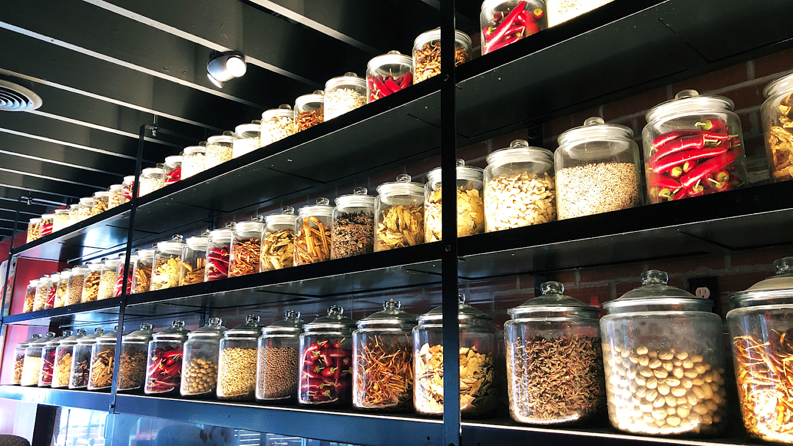

William Giang
Hello! I'm a passionate and driven individual on the path to becoming a dentist. Currently, I am a dedicated college biology student, fervently working towards my goal of joining dental school. At 22 years old, I find myself in a dynamic phase of learning and growth, constantly seeking opportunities to expand my knowledge and skills in the field of dentistry.
In addition to my academic pursuits, I am actively engaged in gaining practical experience in the dental field. I work part-time as a dental assistant, where I have the privilege of applying my theoretical knowledge to real-world scenarios. This role has not only deepened my understanding of dental procedures but has also allowed me to witness firsthand the impact of oral health on individuals' overall well-being.
My journey into the dental profession is complemented by a diverse background in teamwork and communication. Prior to my venture into dentistry, I gained valuable experience working in restaurants. These experiences honed my ability to collaborate effectively with diverse teams and enhanced my communication skills. I believe that these qualities are invaluable in fostering positive relationships with patients and colleagues in the dental field.
One of my standout attributes is my proficiency in languages. I am fluent in four languages, which not only facilitates effective communication with a broader range of individuals but also adds a cultural richness to my interactions. In a field where clear communication is vital, my linguistic abilities empower me to connect with a diverse patient base, fostering trust and understanding.
Customer service excellence is another skill I bring to the table. Having worked in service-oriented roles, I understand the importance of providing a positive and comfortable experience for individuals. This is particularly relevant in a dental setting, where patients may have concerns or anxieties. My commitment to exceptional customer service aligns with my goal of creating a welcoming environment that puts patients at ease.
Outside of my academic and professional pursuits, I am deeply committed to giving back to the community. During my free time, I engage in volunteer activities, leveraging my skills and knowledge to contribute to initiatives that promote oral health awareness. This commitment reflects my belief in the transformative power of dentistry to positively impact individuals and communities.
I am a determined and multilingual individual with a strong foundation in biology and a growing proficiency in dentistry. Through my academic journey, work experience, and commitment to community service, I am actively shaping my future as a compassionate and skilled dentist. I look forward to the exciting challenges and opportunities that lie ahead on this rewarding path.
Experience
Dental Assistant
• Dental Assistant
• Proficient in 4 languages
• Customer Service
• Assisting doctors and Maintaining workflow
Waiter
• Serving and guaranteeing customer satisfaction
• Communication
• Teamwork
• Supplies Management
Education
UC Riverside
Portfolio
